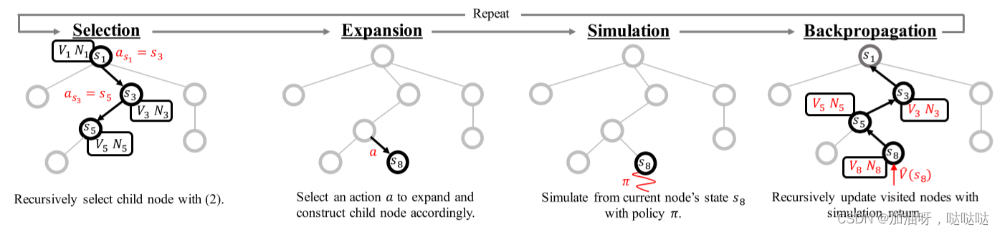
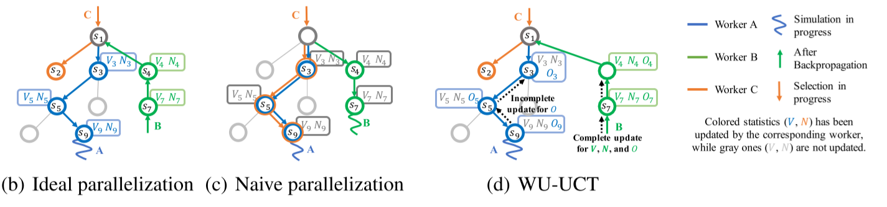
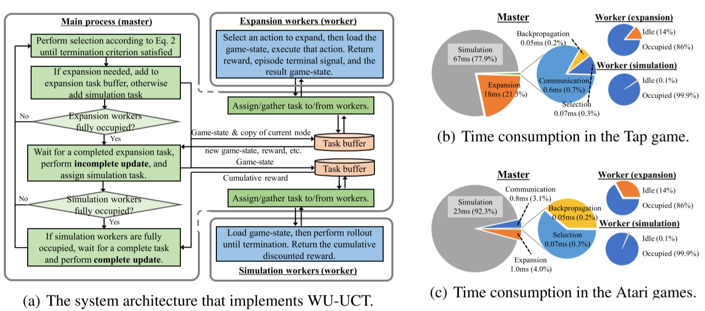
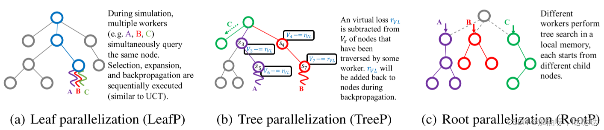
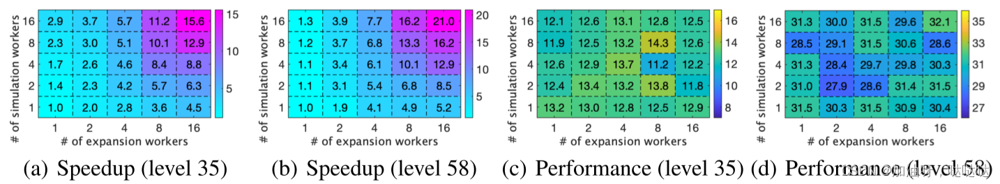
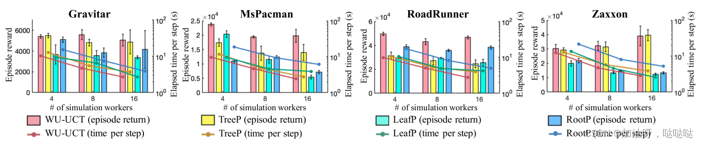
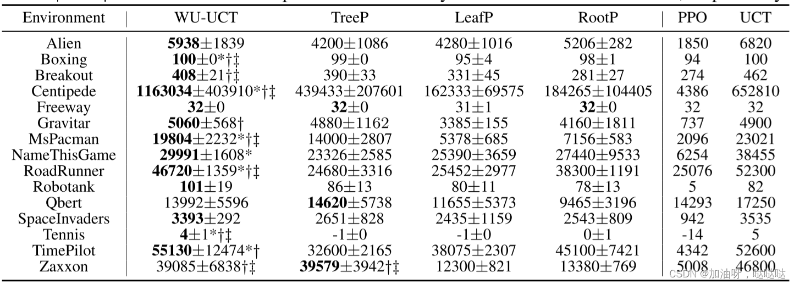

论文精读 一种简单的蒙特卡洛树搜索并行化方法
监控未观察样本: 一种简单的蒙特卡洛树搜索并行化方法
Watch the Unobserved: a Sample Approach to Parallelizing Monte Carlo TreeSearch
论文地址：https://openreview.net/forum?id=BJlQtJSKDB
Github ：https://github.com/liuanji/WU-UCT
摘要
蒙特卡洛树搜索 (MCTS) 算法在许多具有挑战性的基准测试上(例如,围棋等)取得了巨大成功.然而,它们通常需要大量部署,这使得它们的应用成本很高. 此外,由于 MCTS固有的顺序性质,并行化 MCTS 也极具挑战性:每次模拟都严重依赖从先前模拟的数据 (例如,节点访问计数),用于实现有效的探索和利用的权衡. 尽管存在这些困难,我们还是开发了一种算法WU-UCT, 来有效地并行化 MCTS, 它实现了线性加速,并且随着线程数量的增加表现出有限的性能损失. WU-UCT的关键思想是我们引入一组统计数据来跟踪正在进行未结束的模拟样本(称为未观察样本) 的数量. 当我们将最耗时的扩展和模拟步骤并行化时,这些数据被用来修正UCT算法中的选择步骤, 以保证正确的探索和利用的权衡. 在“JOY CITY” 游戏基准和 Atari Game 基准上的实验证明了 WU-UCT与传统的UCT算法相比, 在线性加速和性能方面有明显的提升.
Abstract:
Monte Carlo Tree Search (MCTS) algorithms have achieved great success on many challenging benchmarks (e.g., Computer Go). However, they generally require a large number of rollouts, making their applications costly. Furthermore, it is also extremely challenging to parallelize MCTS due to its inherent sequential nature: each rollout heavily relies on the statistics (e.g., node visitation counts) estimated from previous simulations to achieve an effective exploration-exploitation tradeoff. In spite of these difficulties, we develop an algorithm, WU-UCT1, to effectively parallelize MCTS, which achieves linear speedup and exhibits only limited performance loss with an increasing number of workers. The key idea in WU-UCT is a set of statistics that we introduce to track the number of on-going yet incomplete simulation queries (named as unobserved samples). These statistics are used to modify the UCT tree policy in the selection steps in a principled manner to retain effective exploration-exploitation tradeoff when we parallelize the most time-consuming expansion and simulation steps. Experiments on a proprietary benchmark and the Atari Game benchmark demonstrate the linear speedup and the superior performance of WU-UCT comparing to existing techniques.
1.介绍
最近, 蒙特卡罗树搜索 (MCTS) 算法, 如UCT (Kocsis, 2006) , 在解决许多具有挑战性的人工智能 (AI) 问题方面取得了巨大成功, 包括视频游戏 (Guo, 2016) 和围棋 (Silver, 2016年) . 然而, 它们依赖于大量的与环境交互 (例如数百万), 来构建用于决策的搜索树, 这导致了很高的时间复杂性 (Browne, 2012). 由于这个原因, 并行化MCTS的需求越来越大. 然而, 在不降低性能的情况下并行化 MCTS 是困难的 (Segal, 2010; Mirsoleimani, 2018a; Chaslot, 2008), 主要是因为每次 MCTS 迭代都需要来自先前迭代的信息以提供有效的探索和利用. 具体来说, 并行化 MCTS 将不可避免地覆盖这些迭代信息, 我们将在第 2.2 节中展示这种信息丢失可能会导致性能显着下降. 因此, 关键问题是如何获取和利用更多可用信息来消除并行化造成的信息损失, 并帮助算法实现更好的探索和利用的权衡.
为此, 我们提出了 WU-UCT (Watch the Unobserved in UCT), 这是一种新颖的并行 MCTS 算法, 可以在有限的性能损失下实现线性加速. 这是通过概念创新 (第 3.1 节) 以及有效的真实系统运行 (第 3.2 节) 来实现的. 具体来说, WU-UCT 克服上述挑战的关键思想是用于跟踪正在进行但未完成的模拟样本数量, 称为未观察样本. 我们将这些新的样本与原始观察样本相结合, 用来修正UCT算法中的选择步骤, 正如我们将在第 4 节中展示的那样, 这在并行化过程中有效地保持了探索和利用的权衡. 我们提出的方法已成功部署在真实的系统中, 用于有效且准确地评估手机游戏“Joy City”中用户通过关卡的比率 (称为用户通过率), 目的是减少他们的设计周期. 在这个基准上, 我们展示了 WU-UCT 在预测用户通过率 (第 5.1 节) 方面实现了接近最优的线性加速和卓越的性能. 我们在 Atari Game 基准上进一步评估 WU-UCT, 并将其与最先进的并行 MCTS 算法 (第 5.2 节) 进行比较, 这也证明了我们卓越的加速和性能.
2.并行化MCTS的困难
我们首先介绍 MCTS 和 UCT 算法, 以及它们在并行化方面的困难.
2.1 蒙特卡洛树搜索和上限置信度 (UCT)
马尔可夫决策过程(MDP) $< S,\ A,\ R,\ P,\ \gamma >$,智能体与环境交互以最大化长期累积奖励. 具体来说, 智能体在状态$s{t} \in S\ $下根据策略 $\pi$ 选择动作 $a{t} \in A$,故通过MDP转换到下一个状态$s{t + 1}\sim P\left( \left. \ S{t + 1} \right|S{t},\ a{t} \right)$,并且获得奖励$R\left( s{t},\ a{t} \right)$.智能体的目标时学习一个最优策略$\ \pi^{*}$, 使得长期累积奖励最大化:
其中 $s\ \in \ S$ 表示初始状态, $\gamma\ \in \ (0,\ 1\rbrack$是折扣因子. 为了解决上述问题, 已经开发了许多强化学习 (RL) 算法(Sutton&Barto, 2018) , 包括无模型算法 (Mnih, 2013；2016；Williams,1992；Konda&Tsitsiklis, 2000；Schulman, 2015；2017) 和基于模型的算法(Nagabandi, 2018；Weber, 2017；Bertsekas,2005；Deisenroth&Rasmussen, 2011) . 蒙特卡罗树搜索 (MCTS)是一种基于模型的RL算法, 它选取每个动作的最优动作 (Browne et al., 2012).具体来说, 它使用MDP模型 (或采样) 通过构建搜索树 (图1(a))来确定每个步骤的最优动作, 其中每个节点 $s$ 表示一个动作 $a$ 访问状态,
从$s$开始的每个边表示一个可以在该状态下采取的操作,以及节点$s’$表示采取动作$a$后的状态. 如图1(a) 所示,MCTS重复执行四个顺序步骤: 选择、扩展、模拟和反向传播.选择步骤是遍历现有搜索树, 直到满足叶节点 (或其他终止条件) ,方法是根据树策略选择每个节点的动作 (边) .一种广泛使用的节点选择策略是树的置信上限 (UCT) (Kocsis, 2006年) :
其中 $C(s)$ 表示 $s$ 的所有子节点集; 第一项 $V{s’}$ 表示从节点 $s’$状态开始可以收到的长期累积奖励的估计值, 第二项表示估计的不确定性(置信区间的大小). 根据置信上限计算置信区间(UCT), 使用 $N{s}$ 和$N{s’}$, 表示节点 $s$ 和 $s’$ 的被访问次数. 因此,UCT策略的关键思想是根据预期回报的估计 (即, 置信上限) 选择最佳动作,从而在利用 (第一项) 和探索 (第二项) 之间取得平衡, $\beta$ 控制平衡.一旦选择过程到达搜索树的叶子节点 (或满足其他终止条件),我们将根据先前的策略通过添加新的叶子节点来扩展节点. 然后, 在模拟步骤中,我们通过在环境中使用默认 (模拟) 策略运行模拟来估计其值函数 (累积奖励)${\hat{V}}{s}$ 最后, 再反向传播,将$V{s}$和$N{s}$从叶子节点$s{T}$递归的更新到所选路径的根节点$s{0}$($t \sim \lbrack 0,\ T - 1\rbrack$)
其中, ${\hat{V}}{s{T}}$是$s{T}$的模拟返回； $a{t}$表示在状态$s_{t}$下, 在 (2) 之后选择的动作.

- a.每个 (非并行) MCTS操作由四个连续步骤组成: 选择、扩展、模拟和反向传播, 其中扩展和模拟步骤通常最耗时.

图1: MCTS及其并行化. (a) MCTS概述. (b) 理想的并行化:假设最新的统计数据${ V{s},N{s}}$ (彩色)在模拟开始时就可供所有线程使用 (实际上不现实). (c)并行化MCTS的关键挑战是: 线程只能访问过时的${ V{s},N{s}}$ (灰色),导致诸如探索失败之类的问题. (d) WU-UCT跟踪不完整模拟查询的数量(表示为$O_{s}$ ), 并以原则方式修改UCT策略, 以保持有效的探索和利用的权衡.它实现了与理想的并行化相当的加速和性能.
2.2 MCTS并行化的本质困难
上述讨论表明, MCTS算法本质上是顺序的:新扩展中的每个选择步骤都需要完成之前的扩展,以便为UCT树策略提供更新的数据 $V{s}$ 和 $N{s}$.尽管最新数据的要求不是强制性的,但实际上需要它来实现有效的探索和利用的权衡 (Auer, 2002年). 具体来说,最新数据有助于UCT树策略识别和删除非奖励的分支,广泛访问奖励路径以获得更多深度. 同样,为了实现最佳性能, 当使用多个线程时,还必须确保每个线程在自己的选择步骤中使用最新的数据 (图1 (b) 中的彩色$V{s}$ 和 $N{s}$). 然而, 根据以下观察结果, 将MCTS并行化是不可能的.首先, 与其他两个步骤相比,扩展步骤和模拟步骤通常更耗时, 因为它们涉及与环境 (或模拟器)的大量交互. 因此, 如图1(c) 所示, 当线程C启动选择一个新步骤时,其他线程A和B很可能仍处于模拟或扩展步骤中. 这会阻止他们更新其他线程 (如C)的 (全局) 数据信息. 在不同的线程中使用过时的数据信息 (灰色的 $\text{Vs}$ 和 $\text{Ns}$), 如果设定固定的加速目标的情况下, 可能由于探索和利用失败,导致性能大幅度下降, 我们将在第4节中进行详细讨论. 举个例子, 图1 (c)说明了探索的失败, 由于线程C在其选择步骤中与线程A穿过相同的路径.具体来说, 如果线程A和C在开始自己的选择步骤之间的数据信息没有变化,他们将选择相同的节点, 这将大大减少探索的多样性. 因此,我们在并行化MCTS时要解决的关键问题是如何跟踪正确的数据信息,并以正确性的方式修正UCT策略, 以在不同线程之间保持有效的探索和利用的权衡.
3.WU-UCT
在本节中, 我们首先提出了WU-UCT算法的概念 (第3.1节) , 然后我们介绍了一个使用Master-Worker（主-辅）架构的真实系统的实现 (第3.2节) .
3.1 UCT树中未观察样本
正如我们前面指出的, 在并行化MCTS时,我们要解决的关键问题是如何向每个线程提供最新的数据${ Vs,\ Ns}$,以便他们能够在其选择步骤中实现有效的探索和利用权衡. 在图1(b)中的理想并行化中, 假设情况就是这样. 算法上, 它与顺序MCTS等效,由不同的线程并行执行. 不幸的是, 在实践中,每个线程可用的数据${ Vs,\ Ns}$通常已经过时,因为其他线程的模拟和扩展步骤缓慢且不完整. 具体来说,由于在模拟完成之前无法观察到估计值$\ {\hat{V}}_{s}$,并且线程不应等待更新的数据继续进行, 因此数据${ Vs,\ Ns}$的 (部分)丢失是不可避免的. 现在的问题是:有没有其他办法来解决这个问题？答案是肯定的, 解释如下.
为了弥补一般并行化和理想情况之间的差距,我们仔细检查了它们在统计数据可用性方面的差异. 如统计数据的颜色所示,它们在 ${ Vs,\ Ns}$ 中的唯一差异是由正在进行的模拟过程引起的.尽管只有在模拟步骤完成后才能更新 $\text{Vs}$,但实际上只要线程启动新的扩展, 就可以使用最新的 $\text{Ns}$ 信息.这是我们用来在WU-UCT算法中实现有效并行化的关键. 基于此,我们引入了另一个变量 $\text{Os}$, 以计算已启动但尚未完成的访问的数量,我们称之为未观察样本. 也就是说, 我们的新统计数据 $\text{Os}$监控未观察到的样本数, 然后用于将UCT树策略更正为以下形式:
上述修改后的节点选择策略是, 当有 $Os$ 个线程模拟 (查询) 节点时, 节点 $s$的置信区间最终会在完成模拟后缩小. 因此, 添加 $\text{Os}$ 和 $Os’$对于探索来说, 要事先考虑这样一个事实, 并让其他线程意识到这一点.尽管形式简单, 但它提供了一种正确的方法,以在并行环境下保持有效的探索和利用的权衡；它纠正了探索和利用的权衡的置信度.由于置信度会立即更新 (即在模拟开始时),因此可以保证最新启动的线程可以获得到额外的统计数据,这会阻止他们广泛查询同一个节点以及找到更好的节点供他们查询. 例如,当需要多个分支进行探索时, 允许他们被均匀地探索. 相反,当一个节点被充分访问时 (即最大的 $\text{Ns}$ 和 $Ns’$ ),从未观察到的样本中添加 $\text{Os}$ 和 $Os’$ 几乎没有影响, 因为置信区间在$Vs’$ 周围充分缩小, 允许广泛利用最有价值的分支.
3.2 使用 Master-Worker 架构的系统实现
继续解释 WU-UCT 的系统实现, 其整体架构如图 2(a) 所示. 具体来说, 我们使用master-worker 架构来实现 WU-UCT 算法, 考虑以下几点. 首先,由于与选择和反向传播步骤相比, 扩展和模拟步骤更耗时,因此它们应该密集并行化. 事实上, 它们相对容易并行化 (例如,可以独立执行不同的模拟). 其次, 正如我们之前所讨论的,不同的线程需要访问最新的统计数据 ${ Vs,\ Ns,\ Os}$以实现正确的探索和利用的权衡. 为此,选择和反向传播步骤的集中式架构更可取,因为它允许对统计信息的检索和更新添加严格的限制, 使其保持最新. 具体来说,我们使用一个集中的主线程来维护一组全局统计数据 (除了游戏状态等其他数据),并让它负责反向传播步骤 (即更新全局统计数据) 和选择步骤(即利用全局统计数据). 如图2(a) 所示, 主线程重复执行扩展,直到达到预定义的模拟次数. 在每次扩展期间, 它会选择节点进行查询,将扩展和模拟任务分配给不同的线程, 并收集返回的结果以更新全局统计信息.特别是, 我们使用以下不完全更新和完全更新 (如图 2(a) 所示)沿遍历的路径跟踪 $\text{Ns}$ 和 $\text{Os}$ (见图 1(d)).
在模拟任务开始之前执行不完全更新,使更新后的统计数据可以在全局范围内即时可用；在模拟返回可用后完成完整更新,类似于顺序算法中的反向传播步骤. 此外, $\text{Vs}$也在完整更新步骤中更新. 当我们并行化耗时较长的扩展和模拟步骤时,主线程和子线程之间明确的分工提供了顺序选择和反向传播步骤.它通过集中式主线程确保所有线程的最新统计数据,并在没有太多性能下降的情况下实现线性加速 (实验结果见第 5 节).

图 2: WU-UCT 的系统架构及其时间消耗示意图. (a) 绿色块和任务缓冲区在 master 处操作, 而蓝色块由
worker 执行.(b-c) 两个游戏基准的时间消耗 (第 5 节)
为了证明上述基本原理,对提出的 WU-UCT s算法进行了一组时间分析, 并在 图2(b)-(c) 中显示结果. 我们展示了主线程和子线程不同部分的时间消耗. 首先, 我们关注子线程, 模拟线程的占用率接近 100%, 模拟步骤完全并行化. 尽管扩展线程没有得到充分利用, 但扩展步骤最大程度地并行化, 因为所需的模拟和扩展任务的数量是相同的. 这表明在扩展线程的数量和模拟线程的数量之间存在一个最佳 (任务相关) 比率, 以最少的资源 (例如内存) 完全并行化这两个步骤. 回到主线程, 在这两个基准测试中, 我们看到在模拟和扩展步骤上花费的时间明显占主导地位, 即使它们都由 16 个线程并行化. 我们最后关注并行化带来的通信开销. 尽管与模拟和反向传播相比更耗时, 但与扩展和模拟步骤所用的时间相比, 通信开销可以忽略不计. 尽管与模拟和反向传播相比更耗时, 但与扩展和模拟步骤所用的时间相比, 通信开销可以忽略不计.
4.监控为观察到的样本的好处
在本节中, 我们将讨论在 WU-UCT 中监控未观察样本的好处, 并将其与几种流行的并行 MCTS 算法 (图3) 进行比较, 包括叶子结点并行化(LeafP)、具有虚拟损失的树并行化(TreeP)和根结点并行化(RootP) . LeafP 并行化了叶子结点模拟, 从而产生了一个有效的十六进制游戏求解器 (Wang, 2018). 具有虚拟损失的 TreeP 最近在挑战现实任务 (如围棋) 方面取得了巨大成功 (Silver, 2016) . RootP 在不同的线程处并行化根节点的子树, 并在所有线程完成模拟后汇总子树的统计信息 (Soejima, 2010) .

- 叶子结点并行化(LeafP): 模拟过程中，多个线程(如A、B、C)同时查询同一个节点。 依次执行选择、展开和反向传播 (类似).
- 树并行化(TreeP): 虚拟损失 $r{\text{VL}}$从已被某个线程遍历的节点的$V{s}$中减去.$r_{\text{VL}}$将在反向传播期间添加回节点.
- c. 根结点并行化(RootP):不同的线程在本地内存中执行树搜索，每个线程从不同的子节点开始。
图3: 三种流行的并行 MCTS 算法. LeafP 并行化模拟步骤, TreeP 使用虚拟损失来鼓励探索, RootP 并行化根节点的子树.
我们认为, 通过引入额外的统计数据 $\text{Os}$, WU-UCT比上述方法实现了更好的探索和利用的权衡. 首先, LeafP 和 TreeP代表了这种权衡中的两个极端. LeafP 在探索方面缺乏多样性,因为它的所有线程都被分配到模拟同一个节点, 这会导致探索崩溃从而性能下降,其方式与一般的并行化非常相似 (见图1(c)). 相比之下, 尽管 TreeP中使用的虚拟损失可以鼓励探索多样性,但这种硬加性的惩罚可能会导致利用失败: 即使线程确定同一节点是最佳的,他们也不太可能共同模拟同一节点 (Mirsoleimani, 2017). RootP试图通过让线程执行独立的树搜索来避免这些问题. 但是,这会减少每个线程的扩展次数, 从而降低 UCT 策略的准确性.与上述三种方法不同, WU-UCT 通过以下方式实现了更好的探索和利用的权衡.它通过使用 $\text{Os}$ 来“惩罚”具有许多正在进行的模拟的节点来鼓励探索.同时, 它允许多个线程利用最优回报的节点, 因为当 $\text{Ns}$ 变大时,这种“惩罚”就会消失.
5.实验
本节在真实系统上评估所提出的 WU-UCT 算法, 以预测手机游戏“Joy City”的用户通过率 (第5.1节) 以及专有 Atari 游戏基准测试 (第5.2节), 旨在展示卓越的性能和接近线性加速.
5.1 “Joy City”游戏的实验
“Joy City”是一款关卡类游戏, 玩法多样且富有挑战性. 玩家点击以消除游戏板上的连接项目. 要通过一个级别, 玩家必须在给定的步骤数内完成某些目标. 用于通过关卡的步数 (称为游戏步数) 是主要的性能指标, 它将大师与初学者区分开来. 由于其大量的游戏状态 (超过 $12^{9 \times 9}$) 和过渡中的高随机性, 这是一项具有挑战性的强化学习任务. 制作系统的目标是准确预测不同游戏关卡的用户通过率, 为游戏设计提供有用且快速的反馈. 在 WU-UCT 的支持下, 系统运行速度提高了 16 倍, 同时准确地预测了用户通过率 (8.6% MAE). 在本小节中, 我们集中分析使用两个典型游戏关卡 (Level-35 和 Level-58) 6 的 WU-UCT 的加速和性能.
我们使用不同数量的扩展和模拟线程 (从 1 到 16) 评估 WU-UCT, 并在图4 (a) - (b) 中报告加速效果. 对于所有实验, 我们将模拟总数固定为 500. 首先, 当我们拥有相同数量的扩展线程和模拟线程时, WU-UCT 实现了线性加速. 此外, 图4 还表明扩展线程和模拟线程都至关重要, 因为降低任一组的线程数量都会降低加速. 除了接近线性的加速特性外, WU-UCT 随着线程数量的增加而减少的性能损失可以忽略不计, 如图4(c)-(d) 所示. Level-35 和 Level-58 的性能标准差 (以平均游戏步数衡量) 在不同数量的扩展和模拟线程中分别仅为 0.67 和 1.22, 远小于它们的平均游戏步数 (12 和30).

图 4: WU-UCT 加速和性能. 结果平均超过 10 次运行. WU-UCT实现了线性加速, 性能损失可忽略不计 (以游戏步数衡量) .
5.2 ATARI 游戏基准测试
我们进一步评估了 Atari Games (Bellemare., 2013) 上的 WU-UCT, 这是强化学习 (RL) 和规划算法的经典基准 (Guo, 2014). Atari Games 是 MCTS 算法的理想测试平台, 因为它的规划范围很长 (数千) 、稀疏奖励和复杂的游戏策略. 我们将 WU-UCT 与第 4 节中讨论的三种并行 MCTS 算法进行比较: TreeP、LeafP 和 RootP. 我们还测试了经典 UCT (比 WU-UCT 大约慢 16 倍) 和 PPO (Schulman, 2017) 的结果作为参考. 通常, 经典 UCT 的性能为并行 UCT 算法设置了一个上限. 之所以包含 PPO, 是因为我们使用精炼的 PPO 策略网络 (Hinton, 2015；Rusu, 2015) 作为所有其他算法的推出策略. 它被认为是并行和经典 UCT 算法的性能下限. 所有实验共进行了 128 个模拟步骤, 所有并行算法使用 16 个线程.
我们首先比较了 WU-UCT 与 15 个 Atari 游戏的基线之间的性能 (通过平均获得奖励衡量) , 该游戏由 16 个模拟线程和 1 个扩展线程完成 (为了公平比较, 因为基线不平行于扩展步骤). 每个任务重复 10 次, 平均值和标准差见表1. 由于选择期间更好的探索和利用的权衡, WU-UCT 在 15 个任务中的 12 个中优于所有其他并行算法. 成对的 t 检验进一步表明, WU-UCT 在 g根节点为7、9 的 7 个任务中的表现明显优于 TreeP、LeafP 和 RootP (通过 Bonferroni 方法调整, p 值 < 0.0011). 接下来, 我们测试模拟线程对加速性能的影响. 在图5中, 我们比较了4、8和16个模拟线程的平均返回时间消耗(每一步). 条形图表明, WU-UCT随着线程数量的增加几乎没有性能损失, 而基线在严重并行化时表现出显著的性能下降. WU-UCT还实现了与基线相比最快的速度, 这得益于高效的master-worker体系结构(章节3.2). 总之, 我们提出的WU-UCT不仅在相同数量的线程下显著优于基线方法, 而且随着并行化水平的提高, 性能损失可以忽略不计.

图5: WU-UCT的速度和性能测试, 以及四款Atari游戏的三条基线. 所有实验均重复三次, 并报告其平均值和标准差(仅针对插曲奖励). 对于WU-UCT, 扩展线程数量固定为1.
表1: 15 款 Atari 游戏的表现. 报告了 10 次试验的平均情节回报 (±标准偏差). 并行算法中最好的平均分数以粗体突出显示.

6.相关工作
MCTS 蒙特卡洛树搜索是一种规划方法, 用于在确定性(Silver, 2016)或随机(Schafer, 2008)环境下进行最优决策. 它对人工智能应用产生了深远的影响(Browne, 2012), 甚至被应用于预测和模仿人类行为(van Opheusden, 2016). 最近, 有大量的工作将MCTS和其他学习方法相结合, 使两种方法相互改进. 例如, Guo等人(2014)利用MCTS的力量来提高无模型RL方法的性能; Shen等人(2018)弥补了MCTS和基于图的搜索之间的差距, 优于RL和知识库完成基线.
并行MCTS 许多并行化MCTS方法的方法已经被开发出来, 其目标是双重的: 在保持算法性能的同时, 使用大量线程的情况下实现接近线性的加速. 流行的MCTS并行化方法包括叶子并行化、根并行化和树并行化(Chaslo, 2008). 叶子并行化的目的是通过分配多个线程查询同一个节点来收集更好的统计信息(Cazenave & Jouandeau, 2007). 然而, 这是以浪费树搜索的多样性为代价的. 因此, 尽管在客户机-服务器网络体系结构的帮助下, 它的性能显著下降, 但却有接近理想的加速(Kato & Takeuchi, 2010). 在根并行化中, 构建多个搜索树并分配给不同的线程. 主线程用于同步来自不同树的统计数据, 这将导致在现实任务中更好的表现(Bourki, 2010). 然而, 一个关于围棋的案例研究揭示了它的劣势, 即使是少量的线程(Soejima, 2010). 另一方面, 树并行化使用多个线程遍历、执行查询和更新共享搜索树. 它显著受益于两种技术. 首先, 添加一个虚拟损失以避免由不同的线程查询同一节点(Chaslot, 2008). 这已被应用于MCTS的各种成功应用中, 如围棋(Silver, 2016)和斗地注(Whitehouse, 2011). 此外, 体系结构方面的改进, 如使用管道(Mirsoleimani, 2018b)或无锁结构(Mirsoleimani, 2018a), 大大提高了算法的速度. 然而, 尽管虚拟损失能够增加多样性, 但即使在四个线程的情况下, 虚拟损失也会降低性能 (Mirsoleimani., 2017;Bourki, 2010). 最后, Zhong等人也提出了了统计未观察样本来调整机械臂选择的置信区间的想法. 然而, 它主要关注并行化多臂阈值老虎机问题 (Chen, 2014) , 而不是像我们所做的树搜索问题.
7.结论
本文提出了 WU-UCT, 一种新颖的并行 MCTS 算法, 通过监控未观察样本的数量来解决并行化过程中统计数据过时的问题. 基于新设计的统计数据, 它有正确地修正了UCT节点选择策略, 实现了有效的探索和利用的权衡. 连同我们以效率为导向的系统实现, WU-UCT 实现了近乎最佳的线性加速, 并且在广泛的任务中只有有限的性能损失, 包括部署的真实系统和 Atari 游戏.
8.感谢
这项工作得到了腾讯人工智能实验室和西雅图人工智能实验室、快手公司的支持. 感谢Xiangru Lian对系统实现的帮助.
参考文献(References):
。。。。。。